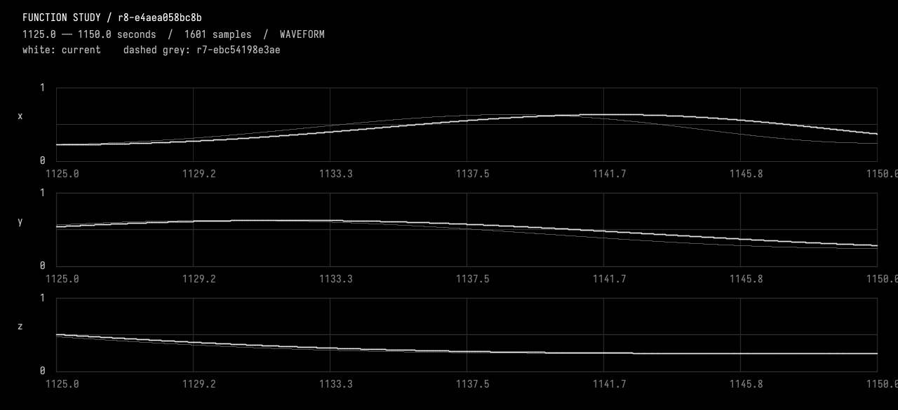
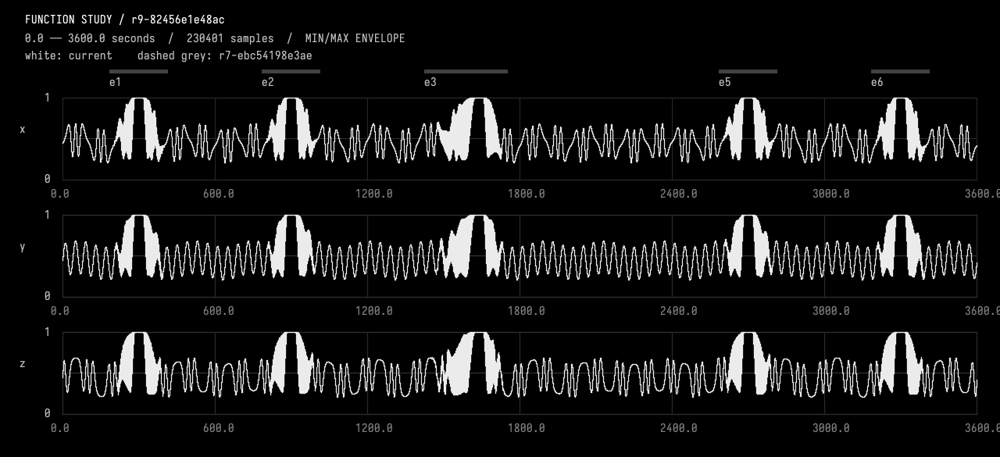

Restore the background
The original exchange, including tool results and plot images. Expand tool activity to inspect the steps; open a plot to see it full size.
Restore the previous unwarped background, but keep all current event timings, e3's second-channel lag, and the deletion of e4. Use the historical source as a reference and create a new checked revision, not a rollback that loses the event work. Compare the result against the revision just before the background warp and demonstrate equality over the whole hour. Show the current overview, and give a concise summary of what this conversation has preserved.
Tool activity · 28 steps
Starting AI conversation
Preparing context and tools.
Planning tool use
Next tool:
InspectFunctionStudyUsing InspectFunctionStudy
{ "revision": "" }InspectFunctionStudy finished
r8-e4aea058bc8b parent, description, durationSeconds, channels, events, choices, source, liveSourceHash, dirty, selectedIds, selectionSeconds, history, semantics images=0
Planning tool use
Next tool:
InspectFunctionStudyUsing InspectFunctionStudy
{ "revision": "r7-ebc54198e3ae" }InspectFunctionStudy finished
r7-ebc54198e3ae parent, description, durationSeconds, channels, events, choices, source, liveSourceHash, dirty, selectedIds, selectionSeconds, history, semantics images=0
Planning tool use
Next tool:
ObserveFunctionStudyUsing ObserveFunctionStudy
{ "compareTo": "r7-ebc54198e3ae", "endSeconds": 1150, "revision": "r8-e4aea058bc8b", "startSeconds": 1125 }ObserveFunctionStudy finished
r8-e4aea058bc8b intervalSeconds, comparedTo, sourceHash, channels, events, choices, selectedIds, sampling, extrema, holdChecks, joins, difference, imageFile, guarantees, localPeaks images=1
Planning tool use
Next tool:
EditFunctionStudyUsing EditFunctionStudy
{"description":"Restore unwarped background using historical r7 source passage; new child of r8 preserving all current events, e3 y lag and e4 deletion; retain warp experiment in history.","expectedRevision":"r8-e4aea058bc8b","expectedSourceHash":"e4aea058bc8b7496a7f4c8856f8a4b23ebf7aa9c283bfa35aaaf48d235938152","source":"import afield.stdlib.Functions\nimport afield.stdlib.StudyComposition\nimport afield.stdlib.StudyEvent\nimport afield.stdlib.StudyChoice\nimport kotlin.math.PI\n\nwith(Functions) {\n val durationSeconds = 3600.0\n val carrierPeriodSeconds = 40.0\n val relativePhasePeriodSeconds = 100.0\n val phaseExcursionRadians = 2.0 * PI / 3.0\n val backgroundCenter = 0.45...
EditFunctionStudy finished
r9-82456e1e48ac Compiled, checked and activated images=0
Planning tool use
Next tool:
CompileKotlinRequestUsing CompileKotlinRequest
{ "file": "afield://function_conversation/function_source/code", "runSetupBlocks": false, "source": "" }CompileKotlinRequest finished
success=true diagnostics=0 setupChanges=0
Planning tool use
Next tool:
CompareFunctionStudyUsing CompareFunctionStudy
{ "afterRevision": "r9-82456e1e48ac", "allowedChannels": [], "beforeRevision": "r7-ebc54198e3ae", "changedEndSeconds": 0, "changedStartSeconds": 0 }CompareFunctionStudy finished
r9-82456e1e48ac before, allowedIntervalSeconds, allowedChannels, preservedScope, changedEventIds, method images=0
Planning tool use
Next tool:
ObserveFunctionStudyUsing ObserveFunctionStudy
{ "compareTo": "r7-ebc54198e3ae", "endSeconds": 3600, "revision": "r9-82456e1e48ac", "startSeconds": 0 }ObserveFunctionStudy finished
r9-82456e1e48ac intervalSeconds, comparedTo, sourceHash, channels, events, choices, selectedIds, sampling, extrema, holdChecks, joins, difference, imageFile, guarantees, localPeaks images=1
Planning tool use
Next tool:
DocumentGuideReadRequestUsing DocumentGuideReadRequest
{ "lineCount": 80, "path": "guides/working.md", "startLine": 107 }DocumentGuideReadRequest finished
Read guides/working.md lines 107–115
Planning tool use
Next tool:
DocumentGuideAppendRequestUsing DocumentGuideAppendRequest
{"path":"guides/working.md","revision":"11c6f0120cec3de59c6e122c19efbc7acfb9e84409be8a0677d58fe87f308cac","text":"\n## Unwarped background restored; event work preserved\n\n- Current working revision r9-82456e1e48ac, a new checked child of r8-e4aea058bc8b. Inspected historical r7-ebc54198e3ae and restored its direct
background(seconds, index)evaluation, removing only the background warp constants/map. Current event declarations and evaluators were retained; historical warp choices are explicitly superseded by the restoration choice. No history was discarded.\n- CompareFunctionStudy against pre-warp r7 with allowedChannels=[]: whole-hour 0..3600 evaluation at <=20 ms plus declared ...DocumentGuideAppendRequest finished
Saved guides/working.md


Restored the unwarped background in r9-82456e1e48ac, a new checked child of r8—not a rollback. I used historical r7-ebc54198e3ae to restore direct absolute-time background evaluation.
Whole-hour equality
Compared against pre-warp r7 with no channels allowed to change: - 180,001 samples per channel, covering 0–3600 s at ≤20 ms spacing plus event joins. - Maximum error: 0; RMS error: 0 for x, y, and z. - No event metadata differences.
The overview above also overlays r7 exactly at the sampled points. Kotlin compilation passed.
Preserved through this conversation
- e3: start 1425 s, 200-second rise, shared all-ones hold 1625–1655 s, end 1755 s.
- e3’s y lag: 6-second peak, smoothly recovered by 1605 s.
- e4 remains deleted, revealing the continuing background.
- e1, e2, e5, e6 retain their timings and stable IDs.
- All five 30-second holds remain intact.
- Revision history retains both the background-warp experiment and the version containing e4.
Recorded in working notes.